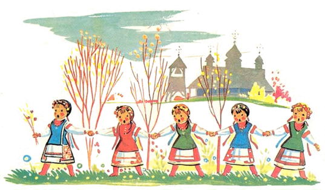

Пісні, які ми вивчили


Подоляночка


Десь тут була Подоляночка
Десь тут була Молодесенька
Тут вона впала
До Землі припала
Сім Літ не вмивалась
Бо Води не мала
Ой устань-устань Подоляночко
Умий Личко так як скляночку
Та візьмися в боки
Покажи нам скоки
Біжи до Дунаю
Бери ту що скраю